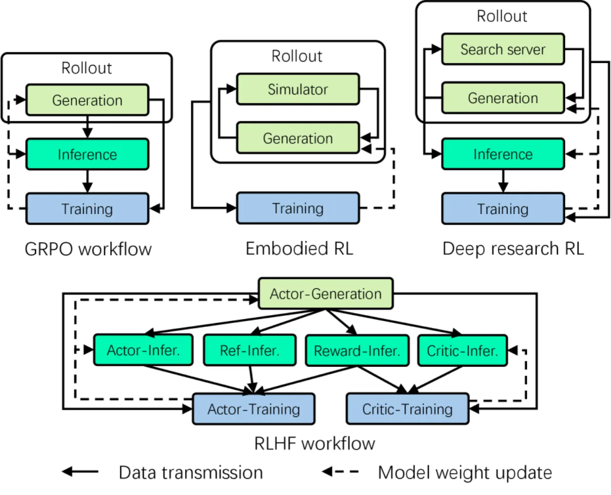
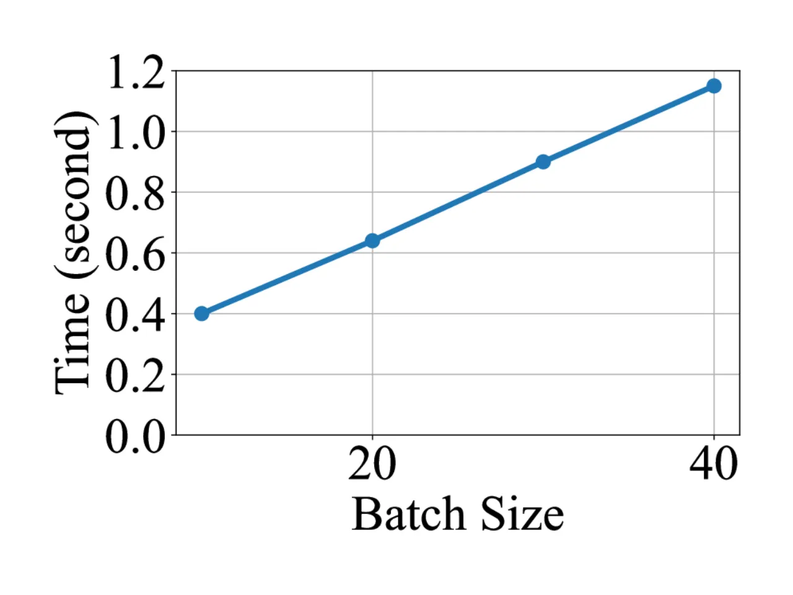
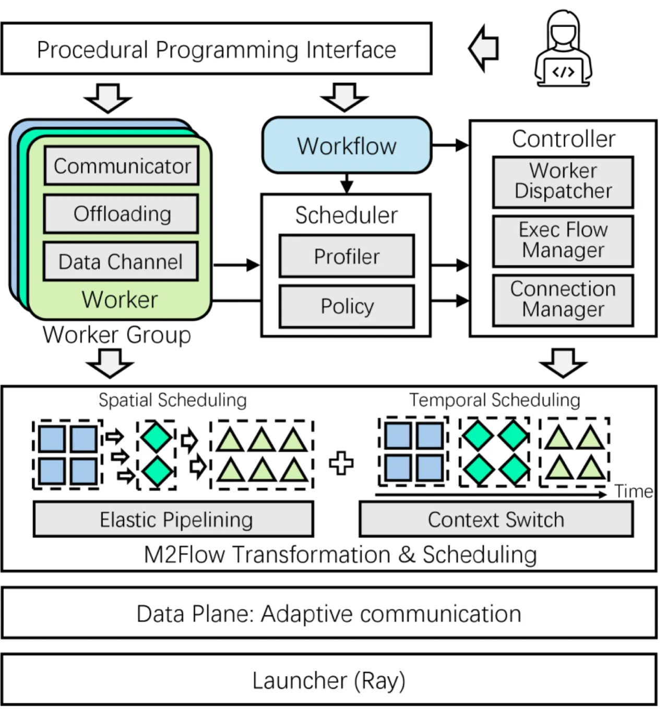
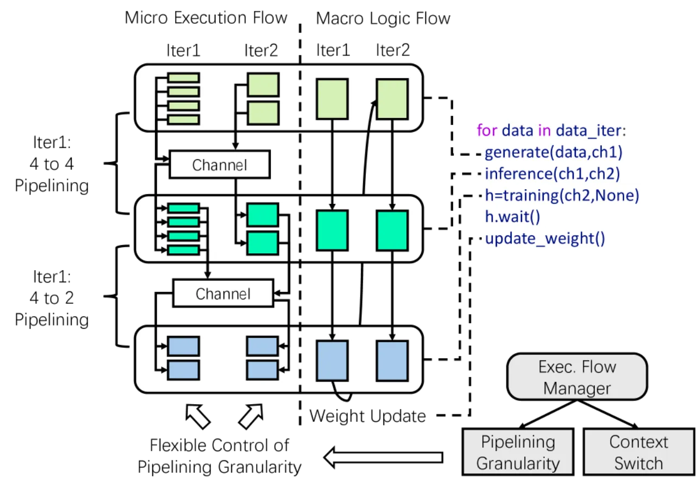
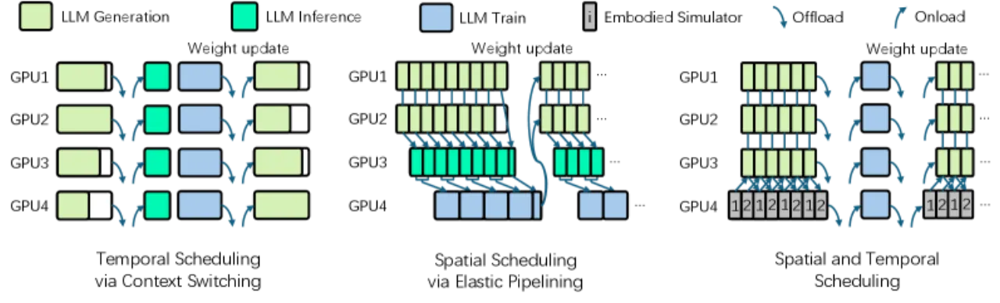
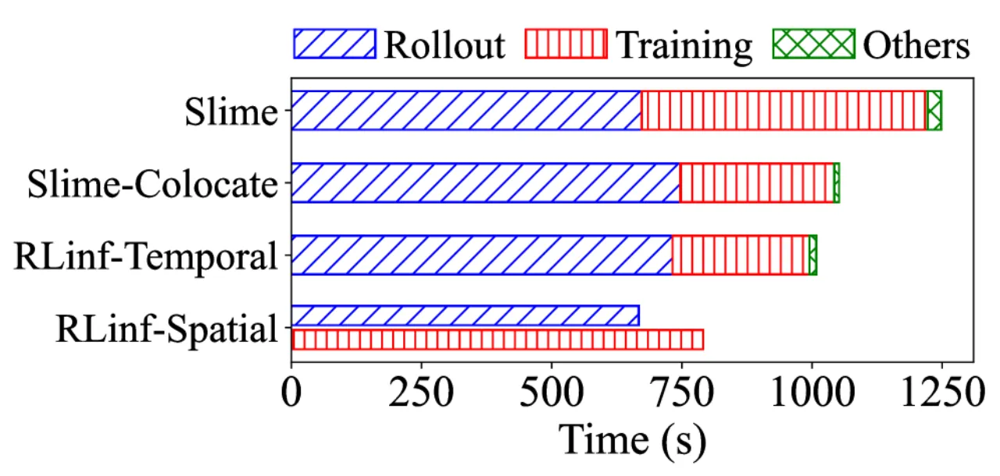

RLinf 是一个高性能 RL 训练系统，提出 macro-to-micro flow transformation（M2Flow）范式，将高层易于组合的 RL 工作流自动分解为优化后的执行计划。系统通过 elastic pipelining 和 context switching 两种调度原语，以及 profiling-guided 调度策略，在推理型与具身 RL 任务上均取得显著吞吐量提升。
现代 RL 工作流高度异构且动态变化，现有训练系统受制于单一执行模式，GPU 利用率低、训练效率差。RLinf 发现系统灵活性不足是高效 RL 训练的核心障碍。
"The major roadblock to efficient RL training lies in system flexibility. Single execution mode of existing RL training systems fails to capture this diversity, leading to suboptimal efficiency."

论文归纳了现有系统面临的三大核心瓶颈：
RLinf 的核心设计范式是 macro-to-micro flow transformation（M2Flow）：将高层逻辑 RL 工作流（macro flow）与物理执行计划（micro flow）解耦，自动生成在时间和空间两个维度上的优化执行方案。

每个 RL 组件被封装为一个 RLinf Worker，内置支持任意 Python 对象的 send/recv 通信原语。系统根据通信双方的位置自动选择最优后端：GPU 间使用 NCCL、同 GPU 内使用 cudaIPC、CPU 间使用 Gloo，从而实现 adaptive communication，无需用户手动配置。

对于在同一设备上顺序执行的组件，RLinf 引入 context switching 机制：通过自动设备锁（device lock）和 offload/onload 函数实现多个 worker 对同一 GPU 的时分复用（time-division multiplexing）。分布式锁确保跨 worker 的全局一致性，避免死锁。
Elastic pipelining 允许 worker 以可变数据粒度（variable data granularity）跨设备并行处理——"output data can be forwarded once a configured size of data batch is ready"，无需等待整个 batch 处理完毕即可触发下游计算，从根本上解决 long-tail rollout 问题。

RLinf 采用递归算法对工作流做 s-t cut 划分，逐层评估 temporal 与 spatial 执行模式的运行时估算。Spatial 模式下的运行时估算公式为：
T_critical + (M/m − 1) × T_bottleneck
其中 M 为总 batch size，m 为数据处理粒度，T_bottleneck 为流水线瓶颈阶段耗时。系统通过 profiling 实测各组件在不同 batch size 下的执行时间，指导最终调度决策，估算误差 temporal 模式 <2%，spatial 模式 <5%。
RLinf 在推理型 RL（Reasoning RL）和具身 RL（Embodied RL）两大场景下与 SOTA 系统（veRL、Slime、SimpleVLA-RL 等）进行对比，评估指标涵盖训练吞吐量（throughput）和模型性能（task success rate / accuracy）。

| 模型规模 | AIME24 | AIME25 | GPQA | 平均 |
|---|---|---|---|---|
| AReaL baseline (1.5B) | 42.50 | 32.19 | 37.82 | 37.50 |
| RLinf (1.5B) | 48.44 | 35.63 | 38.46 | 40.84 |
| Qwen3-1.7B baseline | — | — | — | — |
| RLinf (7B) | 68.33 | 52.19 | 48.18 | 56.23 |

| 任务（ManiSkill） | Vision | Semantic | Position | 平均 |
|---|---|---|---|---|
| RL4VLA | 80.47% | 75.00% | 81.77% | 79.15% |
| RLinf | 82.03% | 78.35% | 85.42% | 81.93% |
| 任务（LIBERO） | Spatial | Object | Goal | Long | 平均 |
|---|---|---|---|---|---|
| OpenVLA-OFT (1 traj) | 56.45% | 25.60% | 45.59% | 9.68% | 34.33% |
| RLinf | 98.99% | 98.99% | 98.99% | 94.35% | 97.83% |
调度策略的搜索开销随 GPU 规模从 8 到 1024 增长，但始终控制在 7×10⁻⁴ 至 5.98 秒以内，远小于 RL 训练时间。吞吐量预测误差在 temporal 模式下 <2%，spatial 模式下 <5%，验证了 profiling-guided 策略的有效性。Qwen3-30B-A3B 在 32–128 GPU 规模上对比 Slime 实现 7.2%–31.2% 吞吐量提升。
论文报告 spatial 模式的吞吐量预测误差为 <5%，高于 temporal 模式的 <2%。响应长度的动态性（response-length variability）是主要原因——elastic pipelining 引入的动态数据粒度使得精确建模更困难（inferred）。
论文中讨论的 RL 工作流通常包含少于 10 个节点（典型 GRPO/PPO 拓扑结构）。对于更复杂的工作流（如多模型协作、长链 agentic RL），调度搜索空间的指数级增长可能带来挑战（inferred）。
RLinf 系统代码量约 20K 行（5K 核心组件 + 2K 公共 worker + 13K 算法/模型支持），尽管提供了声明式 API，但对用户自定义新 RL 算法或集成非标准模型框架，仍需理解内部 worker/调度机制（inferred）。